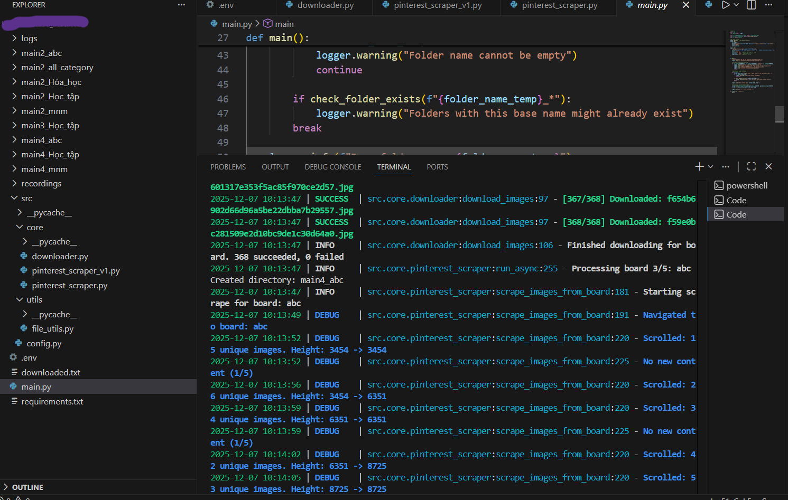
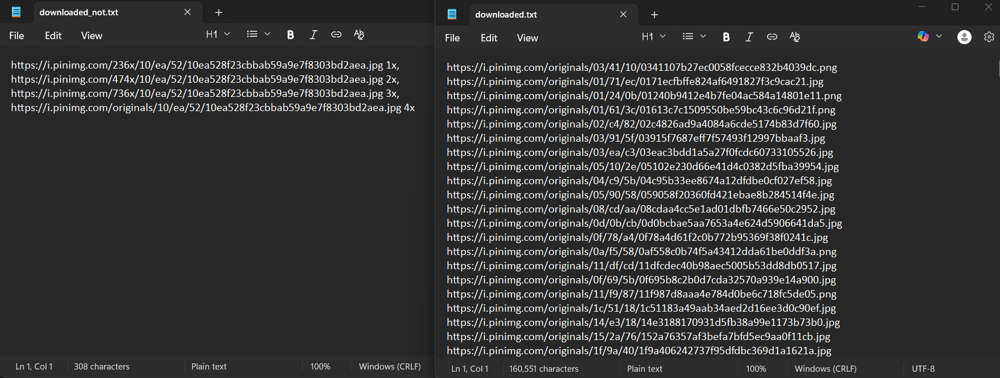

Pinterest Image Downloader - Playwright Version
Tổng quan dự án
Công cụ tự động hóa download hình ảnh từ Pinterest sử dụng Playwright - một framework browser automation hiện đại với khả năng async/await, auto-wait và ghi lại video quá trình thực thi. Dự án hỗ trợ đăng nhập tự động, duyệt qua các board và tải xuống hình ảnh chất lượng cao với parallel processing.
Video Demo:
Video demo quá trình tự động download ảnh từ Pinterest
Async
Processing Mode
Auto
Video Recording
5
Parallel Workers
4x
Resolution
Main Entry Point (main.py)
import sys
from loguru import logger
from src.core.pinterest_scraper import PinterestScraper
from src.utils.file_utils import check_folder_exists
from src import config
# Cấu hình Loguru với màu sắc và file rotation
logger.remove()
logger.add(
sys.stderr,
format="{time:YYYY-MM-DD HH:mm:ss} | {level: <8} | {name} :{function} :{line} - {message} ",
level="DEBUG",
colorize=True
)
logger.add(
"logs/pinterest_scraper_{time:YYYY-MM-DD}.log",
rotation="10 MB",
retention="7 days",
compression="zip"
)
def main():
"""Main function to run the Pinterest image downloader."""
logger.info("=== Pinterest Image Downloader Started ===")
# Validate credentials
if not config.USERNAME or not config.PASSWORD or "default" in config.USERNAME:
logger.error("Pinterest credentials are not set!")
return
# Get folder name from user
folder_name_temp = input("Enter a base name for the download folders: ")
# Initialize and run the scraper
scraper = PinterestScraper(username=config.USERNAME, password=config.PASSWORD)
scraper.run(base_folder_name=folder_name_temp)
logger.success("=== Process Finished ===")Pinterest Scraper (pinterest_scraper.py)
import asyncio
from playwright.async_api import async_playwright, TimeoutError as PlaywrightTimeoutError
from loguru import logger
from src import config
from src.core.downloader import ImageDownloader
class PinterestScraper:
def __init__(self, username: str, password: str):
self.username = username
self.password = password
self.downloader = ImageDownloader()
async def _setup_browser(self):
"""Khởi tạo Playwright browser với video recording."""
self.playwright = await async_playwright().start()
self.browser = await self.playwright.chromium.launch(
headless=config.HEADLESS,
slow_mo=config.SLOW_MO,
args=['--disable-notifications', '--no-sandbox']
)
context_options = {
'viewport': {'width': config.VIEWPORT_WIDTH, 'height': config.VIEWPORT_HEIGHT},
'user_agent': config.USER_AGENT,
'locale': 'en-US'
}
# Video recording nếu được bật
if config.RECORD_VIDEO:
context_options['record_video_dir'] = config.VIDEO_DIR
context_options['record_video_size'] = config.VIDEO_SIZE
self.context = await self.browser.new_context(**context_options)
self.context.set_default_timeout(config.ACTION_TIMEOUT_MS)
self.page = await self.context.new_page()
async def login(self):
"""Đăng nhập Pinterest với Playwright auto-wait."""
await self.page.goto(config.BASE_URL, wait_until='domcontentloaded')
await self.page.click(config.LOGIN_BUTTON_SELECTOR)
await self.page.fill(config.EMAIL_INPUT_SELECTOR, self.username)
await self.page.fill(config.PASSWORD_INPUT_SELECTOR, self.password)
await self.page.press(config.PASSWORD_INPUT_SELECTOR, 'Enter')
await self.page.wait_for_selector(config.AVATAR_SELECTOR, state='visible')
logger.success("Login successful")Parallel Image Downloader (downloader.py)
import os
import requests
from concurrent.futures import ThreadPoolExecutor, as_completed
from loguru import logger
class ImageDownloader:
"""Handles downloading images với parallel processing."""
def __init__(self, max_workers: int = 5):
self.max_workers = max_workers
def _download_single_image(self, url: str, folder_name: str) -> tuple:
"""Download một image từ URL sử dụng requests."""
try:
highest_res_url = url.split(',')[-1].replace(' 4x', '').strip()
filename = highest_res_url.split('/')[-1].split('?')[0]
filepath = os.path.join(folder_name, filename)
if os.path.exists(filepath):
return (highest_res_url, True, "Already exists")
headers = {'User-Agent': config.USER_AGENT}
with requests.get(highest_res_url, stream=True, timeout=15, headers=headers) as r:
r.raise_for_status()
with open(filepath, 'wb') as f:
for chunk in r.iter_content(chunk_size=8192):
f.write(chunk)
return (highest_res_url, True, "")
except Exception as e:
return (url, False, str(e))
def download_images(self, image_urls: list, folder_name: str):
"""Downloads images với parallel processing."""
unique_urls = sorted(list(set(image_urls)))
with ThreadPoolExecutor(max_workers=self.max_workers) as executor:
future_to_url = {
executor.submit(self._download_single_image, url, folder_name): url
for url in unique_urls
}
for future in as_completed(future_to_url):
url, success, error = future.result()
if success:
logger.success(f"Downloaded: {url.split('/')[-1][:50]}")Configuration (config.py)
import os
from dotenv import load_dotenv
load_dotenv()
# --- Credentials ---
USERNAME = os.getenv("PINTEREST_USERNAME", "default_user@example.com")
PASSWORD = os.getenv("PINTEREST_PASSWORD", "default_password")
# --- Browser Settings ---
USER_AGENT = "Mozilla/5.0 (Windows NT 10.0; Win64; x64) AppleWebKit/537.36"
VIEWPORT_WIDTH = 1200
VIEWPORT_HEIGHT = 800
HEADLESS = False
SLOW_MO = 100
# --- Pinterest Selectors ---
BASE_URL = "https://www.pinterest.com"
LOGIN_BUTTON_SELECTOR = "[data-test-id='simple-login-button']"
EMAIL_INPUT_SELECTOR = "#email"
PASSWORD_INPUT_SELECTOR = "#password"
AVATAR_SELECTOR = "[data-test-id='gestalt-avatar-svg']"
BOARD_TITLE_SELECTOR = "[data-test-id='board-card-title'] h2"
IMAGE_SELECTOR = "img[srcset]"
# --- Video Recording ---
RECORD_VIDEO = True
VIDEO_DIR = "recordings"
VIDEO_SIZE = {"width": 1280, "height": 720}Công nghệ sử dụng:
Tính năng nổi bật:
- Auto-wait: Playwright tự động đợi elements sẵn sàng trước khi interact
- Video Recording: Ghi lại toàn bộ quá trình scraping để debug
- Parallel Download: Download nhiều ảnh cùng lúc với ThreadPoolExecutor
- High Resolution: Tự động chọn ảnh có độ phân giải cao nhất (4x)
- Logging: Sử dụng Loguru với file rotation và compression
- Error Handling: Xử lý timeout, popup và các lỗi mạng
Kết quả thu được:

Console log quá trình download ảnh

Console log tiếp tục download

Các thư mục chứa ảnh đã download

File log URLs đã download
Kỹ năng chính
Python Programming
Playwright, Async/Await, Requests, Loguru
Web Scraping
Browser automation, Data extraction, Infinite scroll
Parallel Processing
ThreadPoolExecutor, Concurrent downloads
Video Recording
Session recording, Debug capabilities